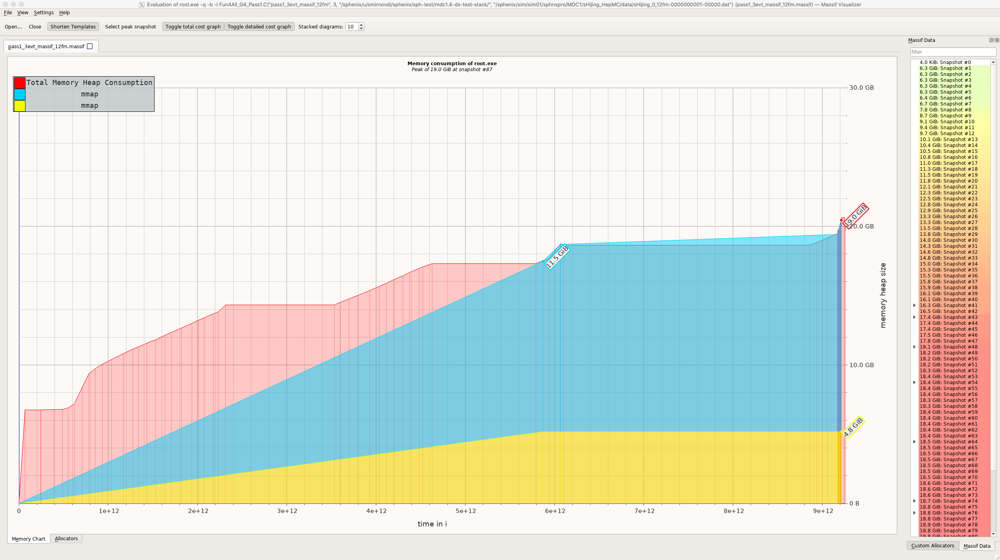
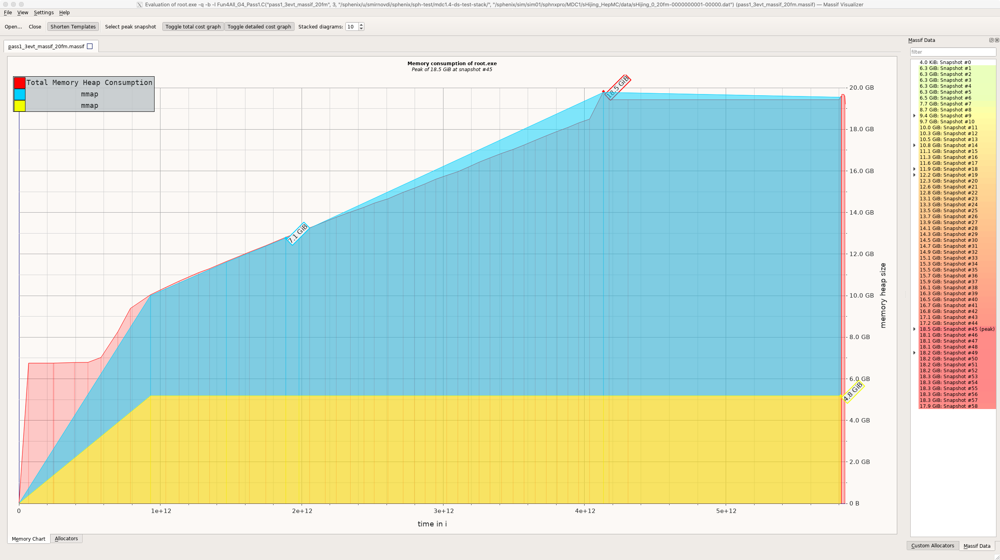
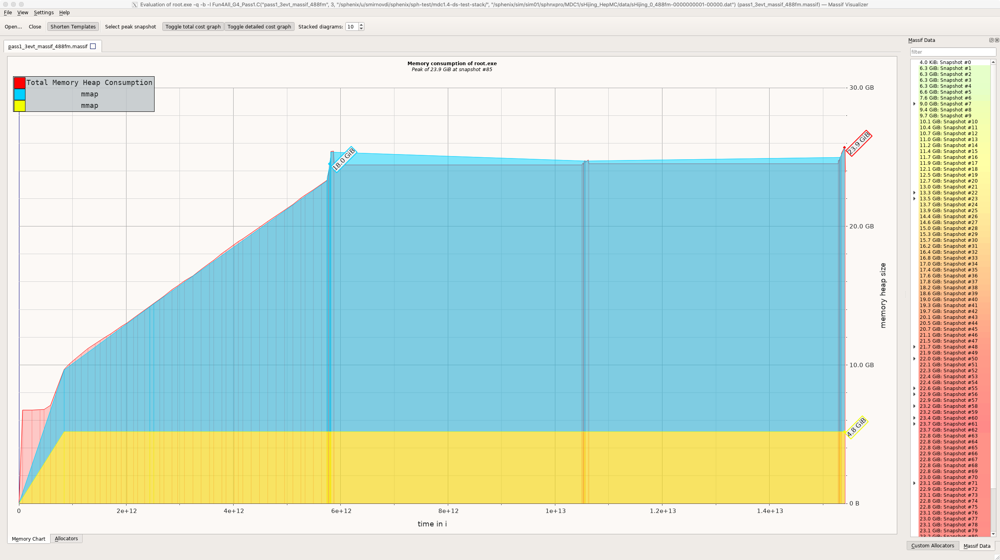
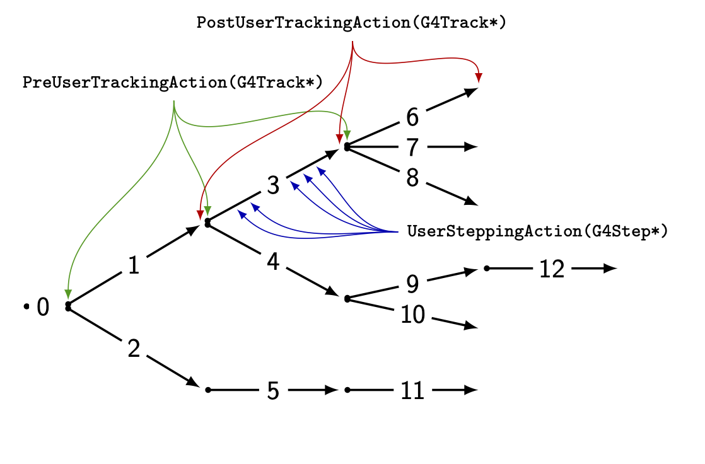
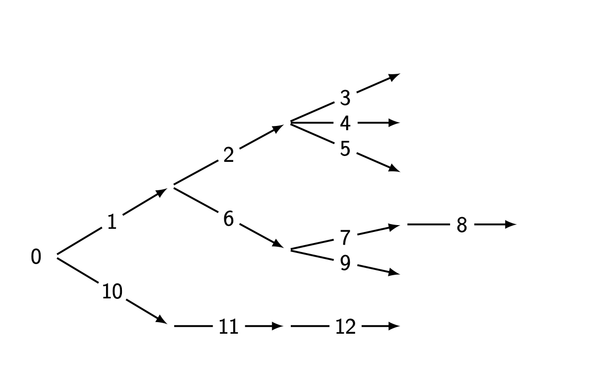
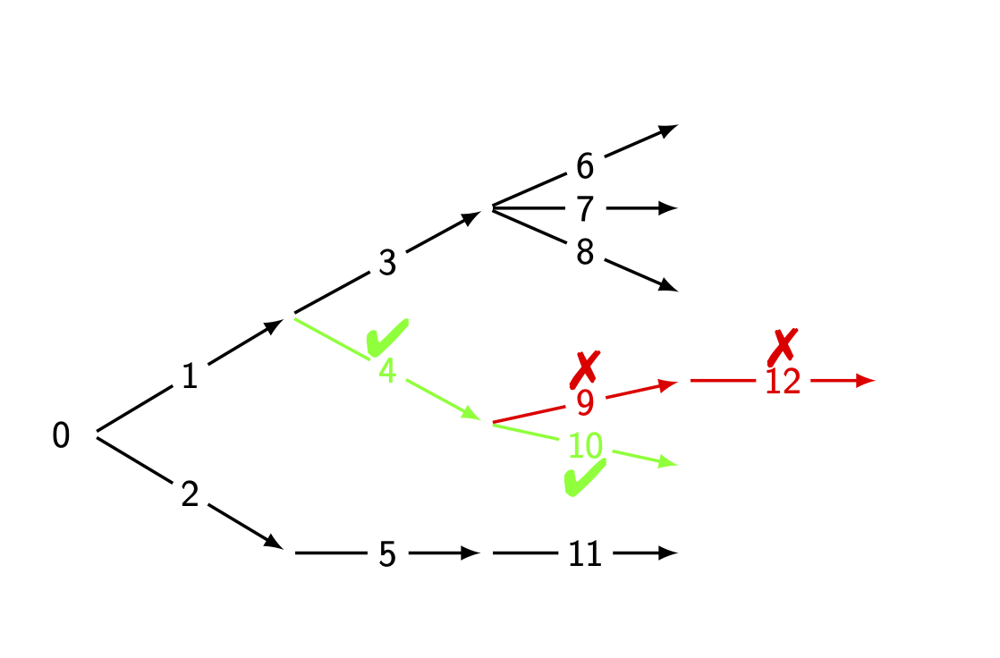
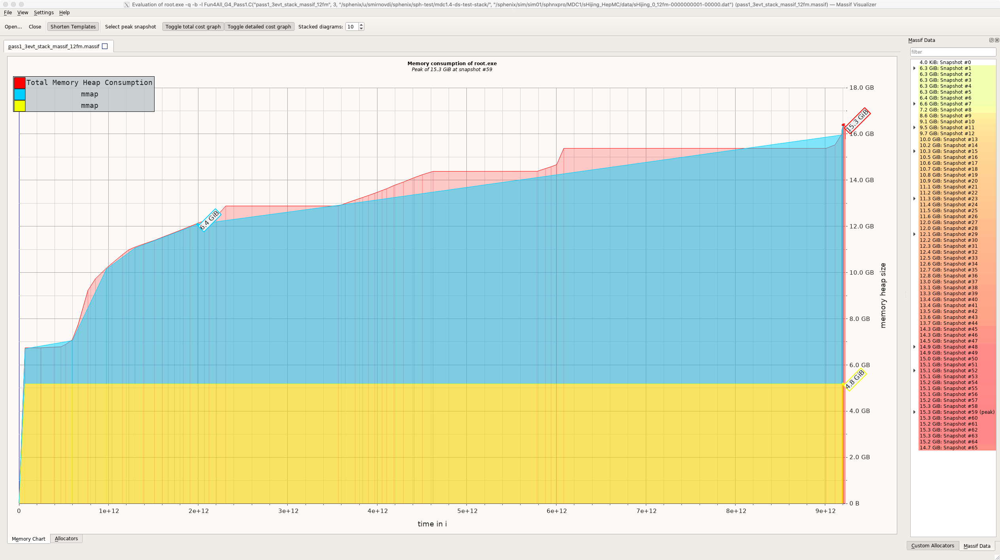
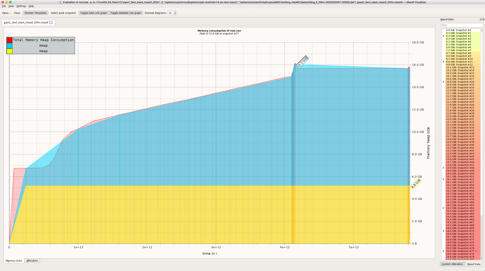
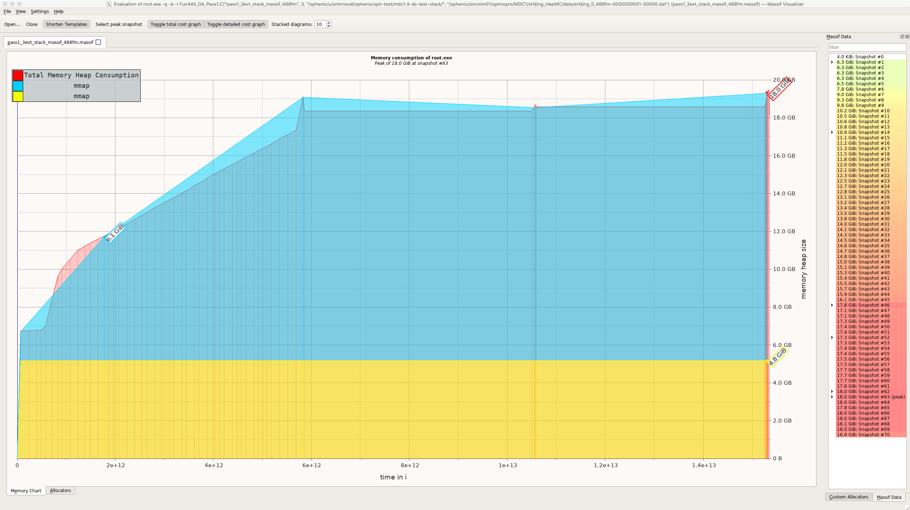

<h1><span style="font-size: smaller;">Investigating Memory Consumption by sPHENIX Simulation</span></h1> - **The Problem.** Simulation jobs using sPHENIX libraries can consume 20GB as, for example, reported by `top`. Specifically, - Hijing events (12fm, 20fm, and 488fm) from files on the farm `/sphenix/sim/sim01/sphnxpro/MDC1/sHijing_HepMC/data/` - Libraries `coresoftware@mdc1-4` and the steering macro from `MDC1/submit/fm_0_12/pass1/rundir` - **Investigation.** Using `valgrind` heap profiler we establish that significant memory allocations (a few Gs) are made during processing of the **truth information** for all particles generated by Geant4 - In current implementation, memory is allocated for each Geant4 particle regardless of the energy deposited in a detector volume. The final decision whether to save the particle or not is made at the end of event. This approach allows to keep the truth information of all parent particles even if they do not contribute to a hit - For the Hijing events this logic does not appear to be very efficient. Only few percents remain after filtering out unwanted particles
<h1>Heap Usage Example: Original</h1>  - Three events, Hijing, 12fm, Max memory consumption 19G
<h1>Heap Usage Example: Original</h1>  - Three events, Hijing, 20fm, Max memory consumption 19G
<h1>Heap Usage Example: Original</h1>  - Three events, Hijing, 488fm, Max memory consumption 24G
<h1>Reminder How Geant4 Interacts with User Routines</h1> <div style="font-size: 0.96em;"> <div style="border: 0px solid; display: inline-block;"> <div style="width: 59%; float: left; border: 0px solid;"> - The top figure illustrates a Geant4 event with two primary particles (`track 1` and `track 2`) and ten secondary particles (`track 3` through `track 12`) - The assessment of the track performed in `UserSteppingAction(...)` callbacks, and decision to keep or discard is known prior to calls of `PostUserTrackingAction(...)`. - Shown track indices roughly represent how Geant4 assigns unique track ids - However, the order in which Geant4 visits the tracks is shown on the right - With this order it is possible to maintain a current stack of tracks at each call of a user routine </div> <div style="width: 40%; border: 0px solid; float: right;">   </div> </div> </div>
<h1><span style="font-size: smaller;">Investigating Memory Consumption by sPHENIX Simulation</span></h1> - **Proposed solution.** Discard unwanted particles early - Since the flag to save the particle is know at the end of Geant4 track processing, the decision to keep it can be made without actually adding them into the final container. This can be done by maintaining a stack of all upstream tracks <div class="hcenter"> <img class="plain" style="width: 49%;" src="graphics/track_tree_stack_1.png" />  </div>
<h1>Tests, Results, and Further Steps</h1> - The proposed solution has been implemented and tested on a few events - In all cases a reduction of about 25% in maximum RSS is seen - The output (truth branch) is verified to be identical before and after the proposed change - Shower parameters do not change. But in the original implementation the list of shower particles is not cleaned after removing unwanted particles - The output branch also contains showers with zero hits and all parameters set to zero - The truth info for vertices is dealt in a similar manner. So, the described logic and solution should be applicable to vertices as well
<h1>Heap Usage Example: With Stack</h1>  - Three events, Hijing, 12fm, Max memory consumption 15G (originally 19G)
<h1>Heap Usage Example: With Stack</h1>  - Three events, Hijing, 20fm, Max memory consumption 15G (originally 19G)
<h1>Heap Usage Example: With Stack</h1>  - Three events, Hijing, 488fm, Max memory consumption 18G (originally 24G)